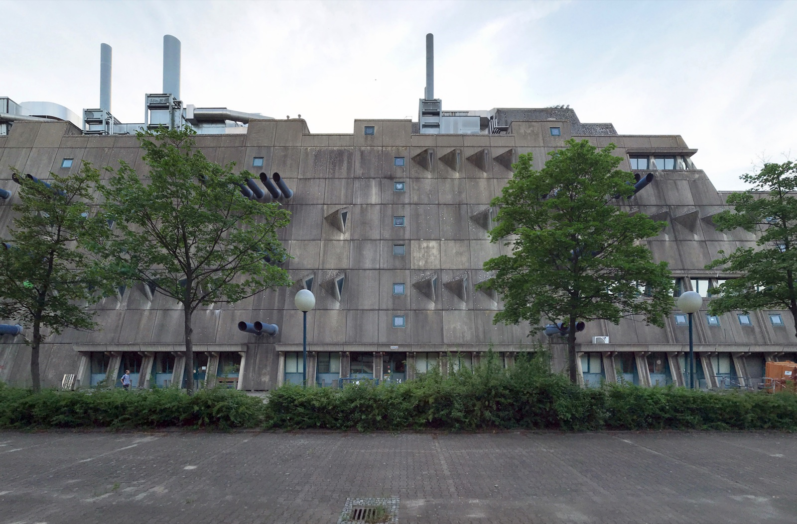

Four buildings · one visual reading at a time
Berlin Concrete Clue Chain
Follow one visible clue through four Berlin buildings. You will finish with a practical exterior, gallery, residential or Alexanderplatz move, not a vague list of concrete names.
This is a visual reading exercise, not a live access guide. Pick the clue that explains what you can see. A wrong choice simply lets you look again.

Clue 01Read the facade before naming the style.
First clue
What makes this facade feel like a machine rather than a smooth office block?
Choose the feature that is actually doing the architectural work in the photograph.
Look again
Your concrete clue chain is complete.
Now choose by the kind of detour you actually want. The strongest building is not automatically the right building for the day you have.
- MäusebunkerMake the specialist, exterior-first Lichterfelde detour.
- St. AgnesUse a Kreuzberg gallery day, after checking current access.
- CorbusierhausRead post-war housing from public space and respect residents.
- Haus des LehrersTake the fast Alexanderplatz comparison when you are already there.
Tool visual credits
Source and licence details for the four photographs rendered inside this tool.
- Mäusebunker, Lichterfelde: Gunnar Klack, CC BY-SA 4.0, via Wikimedia Commons.
- St. Agnes, Kreuzberg: Gunnar Klack, CC BY-SA 4.0, via Wikimedia Commons.
- Corbusierhaus, Westend: Gunnar Klack, CC BY-SA 4.0, via Wikimedia Commons.
- Haus des Lehrers, Alexanderplatz: Bahnfrend, CC BY-SA 4.0, via Wikimedia Commons.